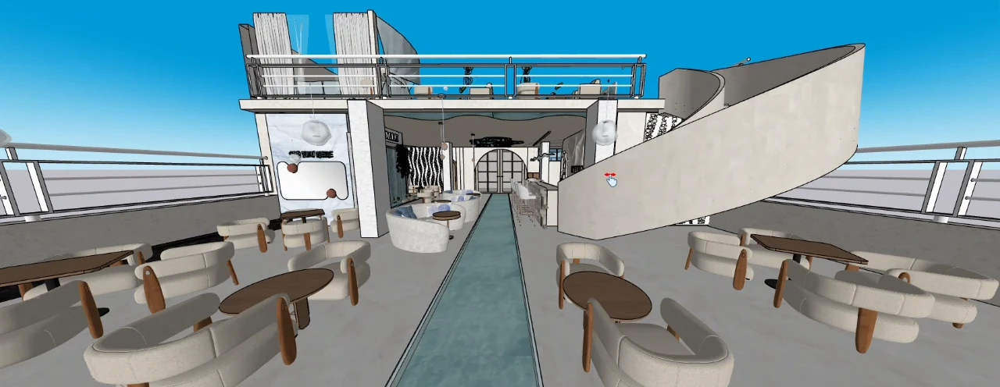
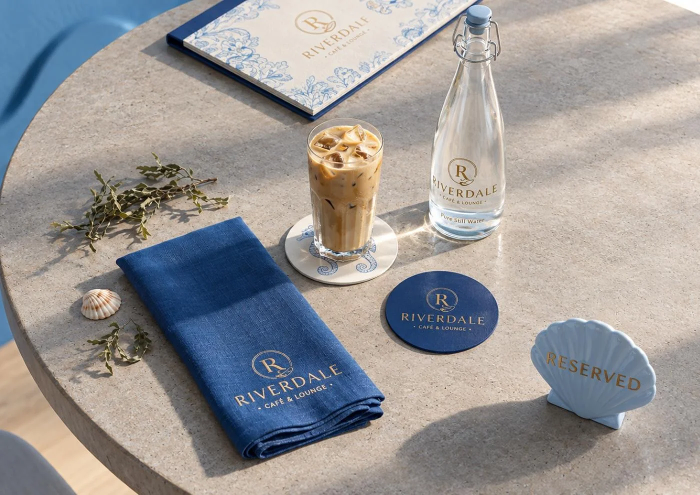
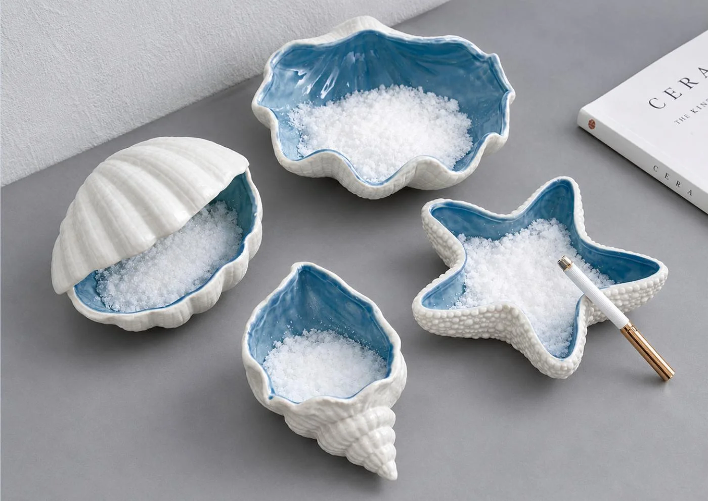

Interior concepts
A visual direction for the atmosphere, palette and character of your space.
I lead an interior design team that brings ideas into focus—from the way a space flows to the details that make it yours.
Worked with 30+ clients
Explore our work
Curved seating. Soft neutrals. A thread of blue running through the space.
In this café and lounge concept, our team explored how intimate seating groups and open shared areas could sit together. Rounded forms carry through the furniture, staircase and feature walls, giving the layout a consistent visual rhythm.
The layout study moves from an overhead view into individual areas, showing the relationship between seating, circulation and service spaces.
The project presentation extends the blue-and-ivory direction into table settings and hospitality details. These are presentation mockups, exploring a coordinated look for the guest experience.


You work directly with me on the brief, priorities and feedback. My interior designer and team develop the design, while I keep the communication and project coordination in one place.
Tell me about your spaceA visual direction for the atmosphere, palette and character of your space.
Furniture arrangements and spatial relationships explored before the details are settled.
Model views and walkthroughs that make the proposed space easier to understand.
A clear brief, organized feedback and an agreed scope of design deliverables.
Send me a few photos, any available dimensions,
and an idea of what you want to change.